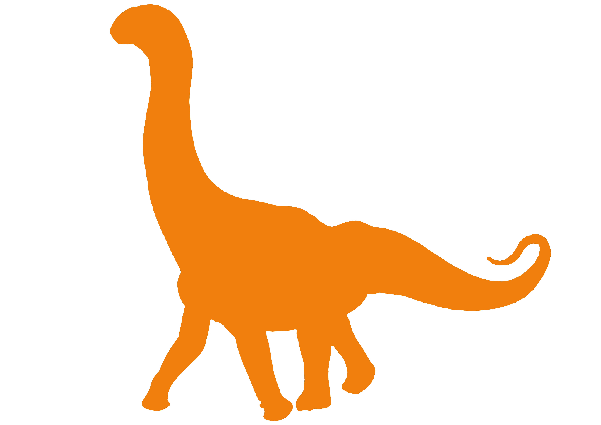

Cetiosaurus 014
Name: Owen
Species: Cetiosaurus Oxoniensis
Diet: Herbivore
Status: Critical
Cetiosaurus Oxoniensis was a sauropod dinosaur of the Cetiosauridae family that lived in the middle Jurassic period of the United Kingdom. It was around 52 feet long and weighing 11 tons; it was a big animal with a long neck that helped it feast on the leaves on trees; the males' necks in particular were equiped with vibrant gular air sacs that would have been used as a mating display and for intimidation. They were the biggest organism in their envrionment, living in open woodlands and floodplains.
Owen is a sub-adult male in the middle of the mating season; drone footage had revealed many attempts at attracting females only to be warded off by the bigger males, resulting in broken ribs and a heavily dented spine as a result of conflict. Nigel has since been taken to our eastern base under intensive care and is scheduled to be released by next month. The Cetiosauruses are the products of Gaia Engineering, who were abandoned in a national park in Rwanda when the company filled for bankruptcy, resulting in an ecological disaster as the cetiosauruses depleted most of the area's vegetation and water which caused them and a number of other animals to starve. Government tast forces were deployed to seperate the sauropods from the populated areas to avoid infastructure and agricultural damage. Nigel and the other cetiosauruses are taking refuge in the eastern woodland regions.
